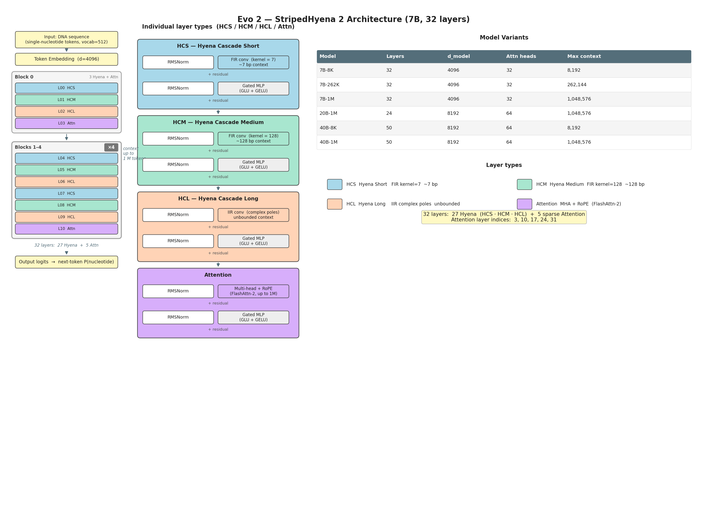
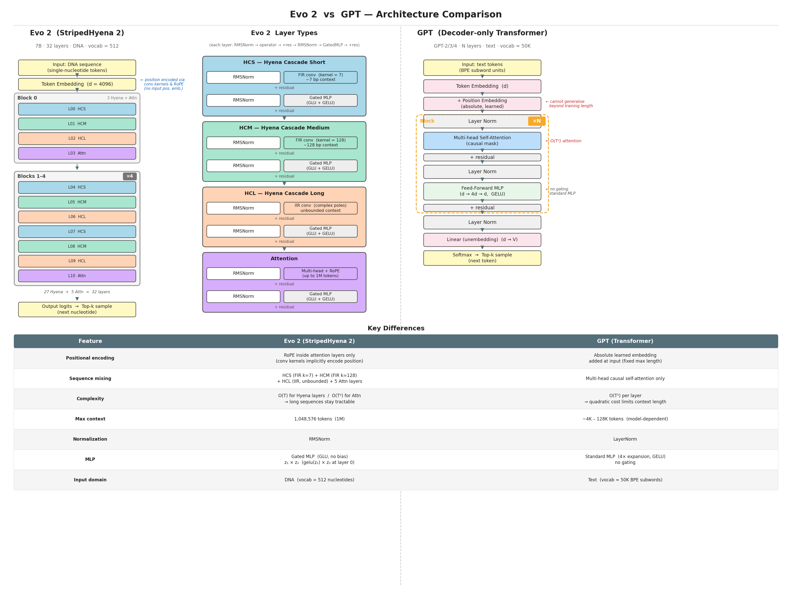

GENE 46100 — Unit 01
2026-04-29
What worked
What it couldn’t do
| nanoGPT on DNA | Evo 2 | |
|---|---|---|
| Parameters | ~7M | 7B – 40B |
| Training data | 3B nucleotides | 9.3T nucleotides |
| Context length | ~1K tokens | up to 1M bases |
| Organisms | human | bacteria, archaea, yeast, humans, phage |
| Architecture | Transformer | StripedHyena 2 |
Same core idea — next-token prediction on DNA — just much larger and across all domains of life.
Transformer attention is O(n²) in sequence length.
| Context length | Quadratic cost | Practical? |
|---|---|---|
| 1K tokens | 1× | ✅ (our nanoGPT) |
| 8K tokens | 64× | ✅ (GPT-4) |
| 128K tokens | 16,384× | ⚠️ (needs FlashAttention) |
| 1M bases | 10⁶× | ❌ transformer alone |
To model gene regulation (enhancers hundreds of kb from their target genes), you need 1M+ context. A pure transformer is too costly.
| Scale | Feature |
|---|---|
| ~3 bp | Codon boundaries |
| ~20 bp | Transcription factor binding motifs |
| ~100 bp | Promoters, splice sites |
| ~1–100 kb | Enhancer–promoter loops |
| ~1 Mb | Chromosomal domains |
A model that only sees local context (short window) or only global context (expensive attention) misses part of the picture.

Arc Institute / Evo 2 (2026)
Most layers are fast convolutions (O(n log n)); attention appears rarely for global mixing.
| Layer type | Scale | Cost |
|---|---|---|
| HCS — Hyena Cascade Short | ~7 bp | O(n log n) |
| HCM — Hyena Cascade Medium | ~128 bp | O(n log n) |
| HCL — Hyena Cascade Long | unbounded | O(n log n) via IIR |
| Attention (5 of 32 layers) | global | O(n²), sparse |
Result: up to 3× faster than a full Transformer at 1M context — making genome-scale training feasible.

Arc Institute / Evo 2 (2026)
Evo 2 assigns a likelihood to every DNA sequence — a lower score for a mutant means the model predicts disrupted function. No fine-tuning. No labeled examples.
On the BRCA1 gene (experimentally measured variants):
Most clinical variants are rare and unlabeled — Evo 2 can prioritize them immediately, zero-shot.
Prompt Evo 2 with the first 10 kb of Mycoplasma genitalium; it completes the full 580 kb genome.
| Natural | Evo 2 generated | Evo 1 (baseline) | |
|---|---|---|---|
| % genes with Pfam hits | ~90% | ~70% | 18% |
| Protein length distribution | ✓ | ✓ | ✗ |
| Structural folds | ✓ | ✓ | partial |
Same result for yeast: 330 kb chromosomes with tRNAs, promoters, and intron structure intact.
Evo 2 acts as a proposal model: it generates candidate sequences; external models (Enformer, Borzoi) score their chromatin accessibility; beam search keeps the best.
Morse code chromatin experiment: - Encoded “EVO2”, “ARC”, “LO” as dot/dash accessibility patterns in DNA - Synthesized and integrated into mouse embryonic stem cells - Measured accessibility by ATAC-seq → AUROC 0.92–0.95
Evo 2 can generate DNA sequences with programmable regulatory activity — validated in living cells.
Trained a Sparse Autoencoder (SAE) on layer 26 activations — no labels, no supervision.
| SAE Feature | What it activates on |
|---|---|
| f/19746 | Prophage regions in E. coli |
| f/1050 | First base of exon (splice start) |
| f/25666 | Last base of exon (splice end) |
| f/15680 | Coding regions (bacteria too) |
| various | TF binding motifs, α-helices, β-sheets |
The model learned gene structure, regulatory elements, and protein properties from sequence alone — no annotation used.
Same training objective, different scale — next-token prediction on DNA, but 9.3T nucleotides across all life
Architecture changes to handle large context — StripedHyena 2 replaces most attention with fast convolutions to reach 1M-token context
Zero-shot — likelihood scores predict variant pathogenicity without any task-specific training
Generation + guidance = design — Evo 2 can be steered to produce DNA with programmable function
Fully open — weights, code, training data (OpenGenome2) all public
Arc Institute / Evo 2 (2026)
GENE 46100 · Deep Learning in Genomics